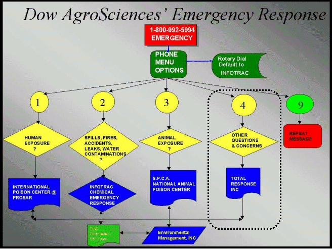

Rat und Hilfe in Europa
Für ProFume Fumiguide stehen verschiedene Hilfsoptionen zur
Verfügung:
1. Ziehen Sie diese ProFume Fumiguide Hilfsdatei zu
Rate.
2. Wenden Sie sich an den IT-Fachmann Ihres Unternehmens.
3. Wenden
Sie sich an den für Sie zuständigen Dow AgroSciences ProFume-Fachmann:
Großbritannien: Chris Pye: 00 (44) 7885 662 406
Frankreich: Stan Buckley: 00 (33) 6073 800 53
Deutschland, Schweiz, Österreich: Benno Ruebsamen: 00
(49) 1712 445 700
Italien: Roberto Barotti: 00 (39) 3357 307 425
Rat und
Hilfe in Nordamerika
Für ProFume Fumiguide
stehen verschiedene Hilfsoptionen zur Verfügung:
1. Ziehen Sie diese
ProFume Fumiguide Hilfsdatei zurate.
2. Wenden Sie sich an den IT-Fachmann
Ihres Unternehmens.
3. Wenden Sie sich an den für Sie zuständigen Dow
AgroSciences ProFume-Fachmann:
Mittlerer Westen USA: Marty Morgan (614-436-3060) oder
Bob Braun (402-445-0661)
Westküste USA: Ken Phelps (916-791-1127)
Süden USA: Joy Rogers (918-266-1641)
4. Rufen Sie das Dow AgroSciences Emergency Response System
unter 1-800-992-5994 an und wählen Sie Option 4 für allgemeine Fragen zu ProFume
Fumiguide während der Geschäftszeiten (8.00 Uhr bis 18.00 Uhr Ortszeit
Indianapolis). Das Dow AgroSciences Emergency Response System wird unten näher
beschrieben.

* Marke - Dow AgroSciences
LLC